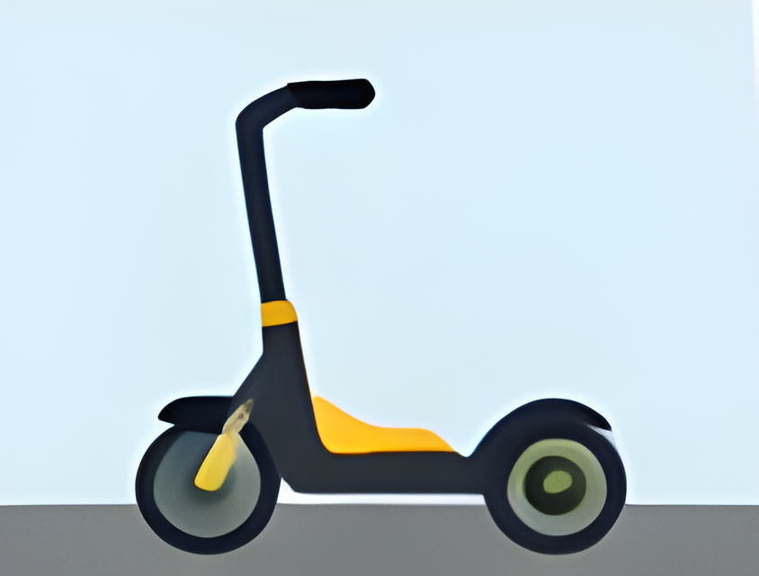
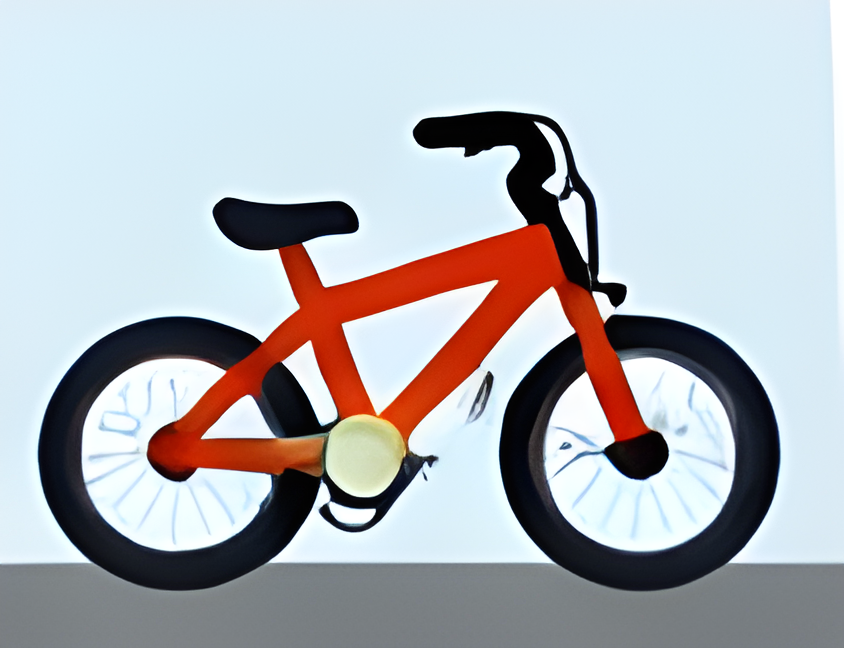
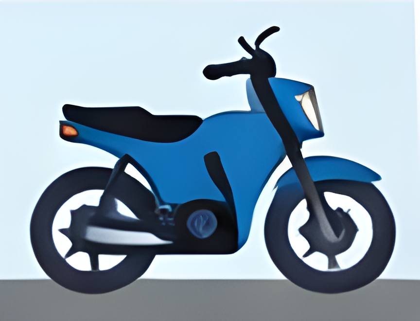
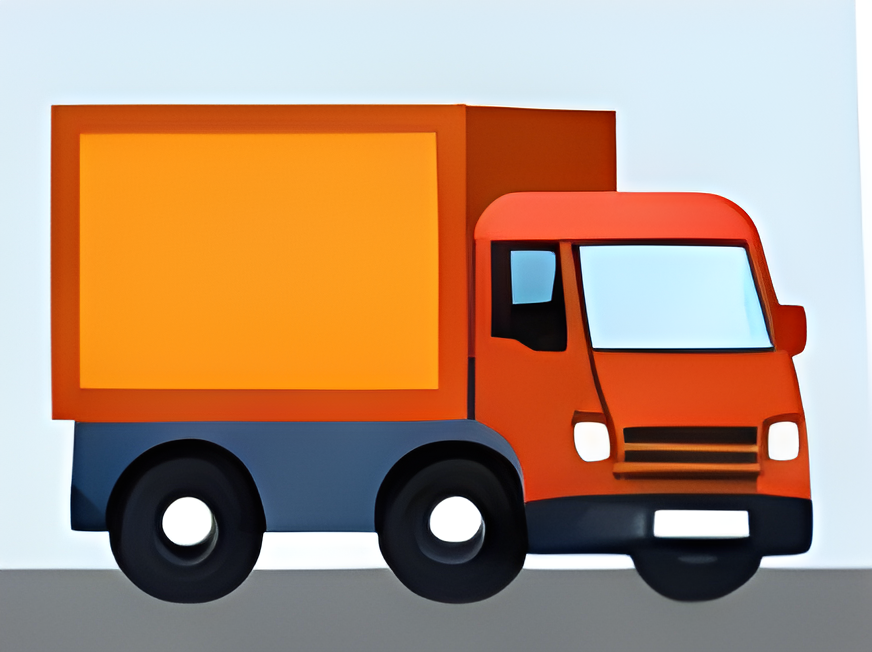

VMP

VMP

Cicles

Turismes

Motos

Camions

Els VMP, com els patinets elèctrics, són vehicles lleugers pensats per a desplaçaments curts per la ciutat.
Els VMP són molt pràctics per moure’s per zones urbanes, però també són vulnerables a causa de la seva mida i manca de protecció. No estan dissenyats per a altes velocitats ni per a vies ràpides, per això s’han d’utilitzar amb precaució i respectant les normes de circulació.


Les bicicletes són vehicles lleugers i ecològics, ideals per al transport individual i l’exercici.
Els cicles són molt pràctics a la ciutat i a les zones recreatives. La seva mida reduïda i lleugeresa permeten moure’s fàcilment, però no tenen protecció davant d’altres vehicles, per la qual cosa existeix risc de lesions. Es recomana l’ús de casc i roba visible, així com respectar les normes de trànsit.
El turisme és el vehicle més comú i equilibrat per a la conducció diària. Està dissenyat per transportar persones de manera còmoda i segura.
El turisme ofereix un bon equilibri entre seguretat, comoditat i rendiment. Gràcies a la seva estructura tancada i als sistemes de seguretat, protegeix millor els ocupants en cas d’accident. A més, és més fàcil de conduir que vehicles grans com camions, cosa que el fa ideal per a la majoria de conductors.
Les motocicletes són vehicles ràpids i àgils, però amb menys protecció per al conductor.
Les motos permeten moure’s fàcilment entre el trànsit i reaccionar ràpidament, però també són més perilloses. Al no tenir carrosseria que protegeixi el conductor, qualsevol accident pot tenir conseqüències més greus. Per això és molt important utilitzar equipament de protecció i conduir amb precaució.
Els camions són vehicles grans i pesants dissenyats per al transport de mercaderies. Tot i que ofereixen una gran estabilitat, tenen limitacions importants en maniobrabilitat i visibilitat.
A causa de la seva mida i pes, els camions necessiten més espai per maniobrar i frenar. Això fa que reaccionin més lentament davant imprevistos. A més, el conductor té punts cecs on no pot veure altres vehicles, cosa que augmenta el risc si la resta de conductors no mantenen la distància.
Interurbana
Urbanes
Les vies interurbanes connecten ciutats, pobles o regions i estan dissenyades per al trànsit de vehicles a major velocitat que en zona urbana. Permeten un flux continu i segur si es respecten les normes.
Les vies interurbanes estan pensades per a viatges llargs i ràpids entre localitats. El seu disseny permet velocitats més altes que a la ciutat, però requereix més atenció a la distància de seguretat i al respecte de la senyalització. No totes les vies interurbanes són iguals; cada tipus té característiques específiques que afecten la conducció.
Les vies urbanes són els carrers i avingudes dins de ciutats i pobles, dissenyades per facilitar la mobilitat de tot tipus d’usuaris: vehicles, vianants i ciclistes. Solen tenir velocitats més baixes i més controls de trànsit que les vies interurbanes.
A les vies urbanes, la seguretat és primordial a causa de la presència de vianants, ciclistes i vehicles de tot tipus. La conducció ha de ser defensiva, respectant les senyals i mantenint una velocitat adequada per reaccionar davant imprevistos. Les vies urbanes estan dissenyades per a la convivència, per això la paciència i la cortesia són clau.
Consells
Infraccions

Accidents freqüents

👉 Són molt comuns en trànsit urbà i retencions.
👉 Freqüents en carreteres interurbanes, especialment secundàries.
👉 Molt habituals en vies urbanes.
👉 Risc alt en zones urbanes i travessies.
👉 Ocorren sobretot en carreteres interurbanes.
👉 Solen tenir conseqüències més greus per la falta de protecció.
👉 Freqüents en autopistes, autovies i avingudes.